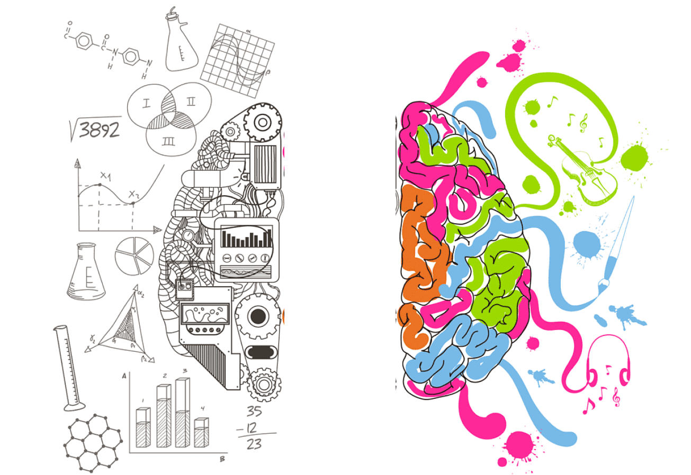

Raina Alhussami
Hello, I am Raina Alhussami, a passionate front-end developer & UX/UI designer with a focus on creating intuitive and delightful digital experiences. My primary goal is to create user-centered solutions that seamlessly align user needs with business objectives.
About Me

Design process
My design process begins with thorough research and analysis. I conduct user interviews, usability tests, and gather insights to uncover valuable information that informs the design decisions. By employing user-centered methodologies such as user personas, journey mapping, and wireframing, I create meaningful experiences that resonate with the target audience.
Ultimately, my goal as a UX designer is to create products that not only meet business objectives but also provide a seamless, enjoyable, and meaningful experience for users. I am excited to contribute my skills, creativity, and passion for design to help shape the future of digital experiences.